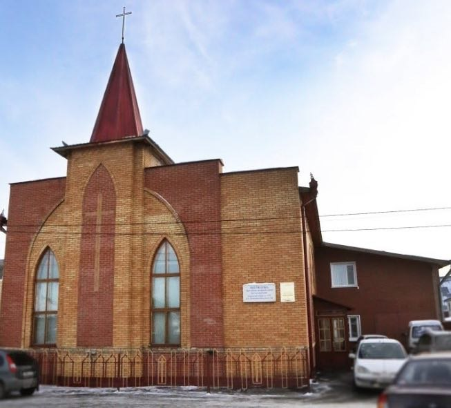

Информация о нас
Церковь Духовное Возрождение — это
евангельская баптистская церковь в городе Тюмень.
Мы приглашаем всех желающих на богослужения, совместные молитвы и изучение Библии.
Наша церковь находится по адресу: г. Тюмень, ул. Демьяна Бедного, 54.
Историю церкви вы можете узнать в этой статье.
Молодежный канал в Телеграмме
Канал в ВК
Расписание
Общее богослужение — 11:00, каждое воскресенье
Библейский час — 18:00, каждую среду
Молодежное общение — 19:00, каждую субботу